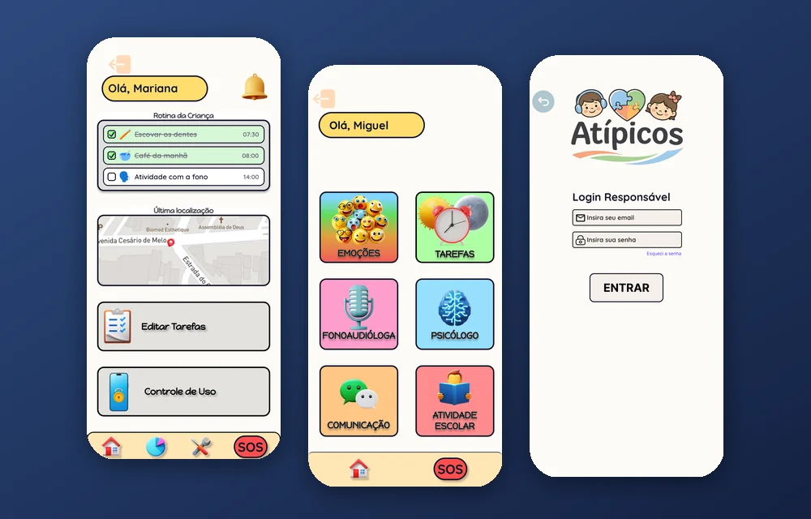
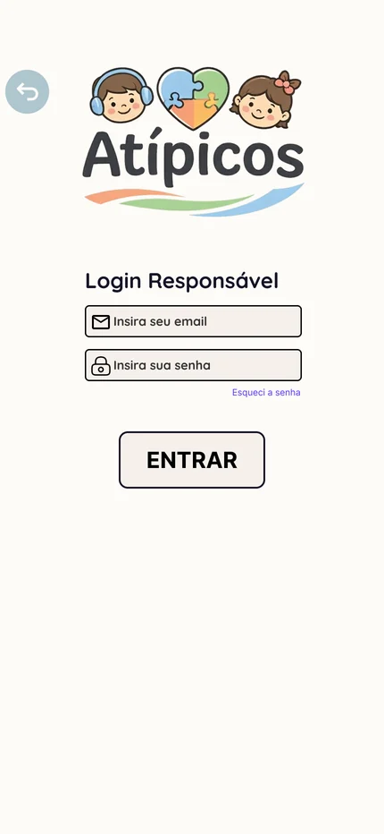
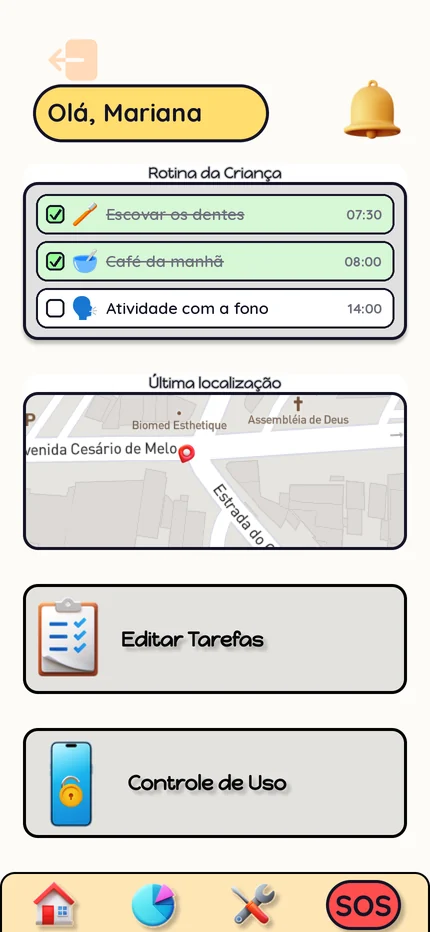
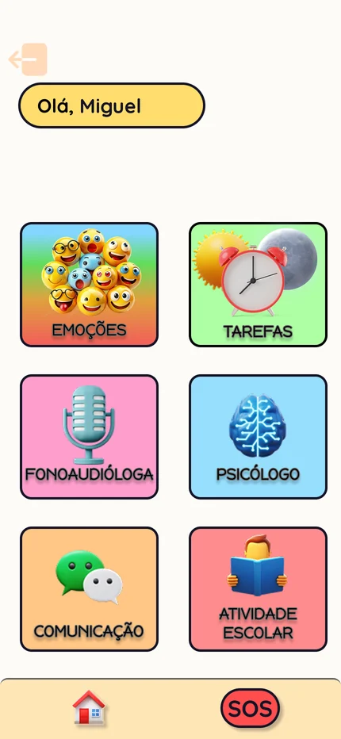

Resultado
Impacto da solução
MVP em desenvolvimento, com telas para responsável, criança e terapeuta, rotina visual, comunicação por símbolos com voz, localização e SOS. Foco em impacto social e organização da rotina.
Projeto acadêmico em equipe • Em desenvolvimento
Aplicativo de apoio a crianças com TEA
Aplicativo mobile em desenvolvimento para apoiar crianças com TEA, responsáveis e terapeutas, com rotina visual, comunicação por símbolos, localização e alerta de SOS. Projeto da UNISUAM, desenvolvido por uma equipe de 6 pessoas. Minha atuação: design, prototipagem e front-end.

Arquitetura
Tecnologias
Telas
Telas do protótipo de interface (Figma), com dados de exemplo.



Resultado
MVP em desenvolvimento, com telas para responsável, criança e terapeuta, rotina visual, comunicação por símbolos com voz, localização e SOS. Foco em impacto social e organização da rotina.
Aprendizados
Trabalho em equipe, desenvolvimento mobile com React Native, integração com Firebase, regras de segurança de dados e design de interfaces acessíveis.
Próximo passo
Se sua empresa precisa digitalizar processos, desenvolver um sistema, automatizar tarefas ou criar um produto digital, vamos conversar.